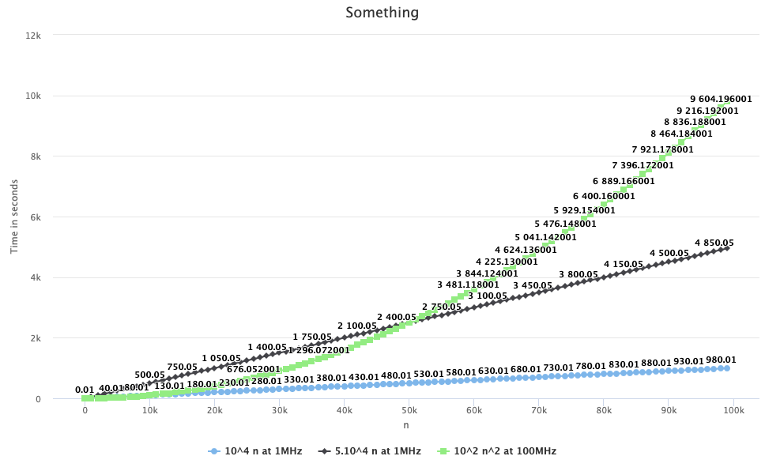

The purpose of this assignment is to understand why algorithms are judged by their Big-Oh notations rather than a more precise model, or runtime measurement. We make a crude approximation of using the clock speed as representing the machine's performance
Using Bridges LineChart object, plot the runtime of an algorithm for problem size ranging from 1 to 105. (Don't use all values of n, take steps of reasonable size.)
Does it really matter that you can get a slightly faster machine if you can get a lower BigOh complexity?
Does it really matter that you can gain a factor of 100 if you can get a lower BigOh complexity?
